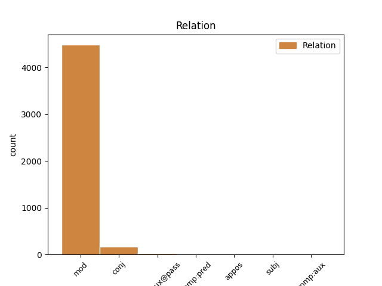
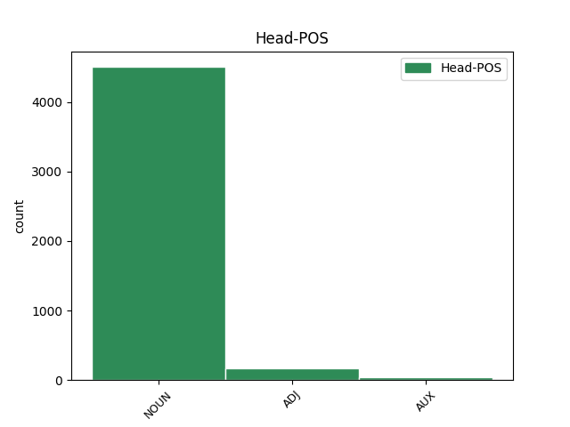
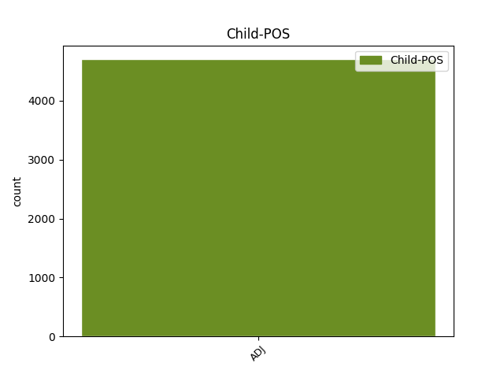

Distribution of features within this leaf



Agreement Rules sorted by frequency.
- When the dependent token is the modifer(mod) of the head token, and the dependent token is ADJ.
1 Zrušují _ _ _ _ 0 _ _ _
2 se _ _ _ _ 0 _ _ _
3 1 _ _ _ _ 0 _ _ _
4 . _ _ _ _ 0 _ _ _
5 nařízení _ _ _ _ 0 _ _ _
6 vlády _ _ _ _ 0 _ _ _
7 ČSSR _ _ _ _ 0 _ _ _
8 č._136/1989_Sb. _ _ _ _ 0 _ _ _
9 , _ _ _ _ 0 _ _ _
10 o _ _ _ _ 0 _ _ _
11 informační _ _ _ _ 0 _ _ _
12 soustavě _ _ _ _ 0 _ _ _
13 organizací _ _ _ _ 0 _ _ _
14 , _ _ _ _ 0 _ _ _
15 2 _ _ _ _ 0 _ _ _
16 . _ _ _ _ 0 _ _ _
17 vyhláška _ _ _ _ 0 _ _ _
18 federálního _ _ _ _ 0 _ _ _
19 ministerstva _ _ _ _ 0 _ _ _
20 financí _ _ _ _ 0 _ _ _
21 č._155/1971_Sb. _ _ _ _ 0 _ _ _
22 , _ _ _ _ 0 _ _ _
23 o _ _ _ _ 0 _ _ _
24 inventarizacích _ _ _ _ 0 _ _ _
25 hospodářských _ _ _ _ 0 _ _ _
26 prostředků _ _ _ _ 0 _ _ _
27 , _ _ _ _ 0 _ _ _
28 3 _ _ _ _ 0 _ _ _
29 . _ _ _ _ 0 _ _ _
30 vyhláška _ _ _ _ 0 _ _ _
31 federálního _ _ _ _ 0 _ _ _
32 ministerstva _ _ _ _ 0 _ _ _
33 financí _ _ _ _ 0 _ _ _
34 č._21/1990_Sb. _ _ _ _ 0 _ _ _
35 , _ _ _ _ 0 _ _ _
36 o _ _ _ _ 0 _ _ _
37 kalkulaci _ _ _ _ 0 _ _ _
38 , _ _ _ _ 0 _ _ _
39 4 _ _ _ _ 0 _ _ _
40 . _ _ _ _ 0 _ _ _
41 vyhláška _ _ _ _ 0 _ _ _
42 federálního federální ADJ AANS2----1A---- Case=Gen|Degree=Pos|Gender=Neut|Number=Sing|Polarity=Pos 43 mod _ _
43 ministerstva ministerstvo NOUN NNNS2-----A---- Case=Gen|Gender=Neut|Number=Sing|Polarity=Pos 0 _ _ _
44 financí _ _ _ _ 0 _ _ _
45 č._23/1990_Sb. _ _ _ _ 0 _ _ _
46 , _ _ _ _ 0 _ _ _
47 o _ _ _ _ 0 _ _ _
48 účetnictví _ _ _ _ 0 _ _ _
49 . _ _ _ _ 0 _ _ _
1 (7) _ _ _ _ 0 _ _ _
2 Pro _ _ _ _ 0 _ _ _
3 účely _ _ _ _ 0 _ _ _
4 tohoto _ _ _ _ 0 _ _ _
5 zákona _ _ _ _ 0 _ _ _
6 se _ _ _ _ 0 _ _ _
7 majetek _ _ _ _ 0 _ _ _
8 a _ _ _ _ 0 _ _ _
9 závazky _ _ _ _ 0 _ _ _
10 člení _ _ _ _ 0 _ _ _
11 na _ _ _ _ 0 _ _ _
12 dlouhodobé dlouhodobý ADJ AAIP4----1A---- Animacy=Inan|Case=Acc|Degree=Pos|Gender=Masc|Number=Plur|Polarity=Pos 0 _ _ _
13 a _ _ _ _ 0 _ _ _
14 krátkodobé krátkodobý ADJ AAIP4----1A---- Animacy=Inan|Case=Acc|Degree=Pos|Gender=Masc|Number=Plur|Polarity=Pos 12 conj _ SpaceAfter=No
15 . _ _ _ _ 0 _ _ _
1 (9) _ _ _ _ 0 _ _ _
2 Využije-li _ _ _ _ 0 _ _ _
3 účetní _ _ _ _ 0 _ _ _
4 jednotka _ _ _ _ 0 _ _ _
5 možnosti _ _ _ _ 0 _ _ _
6 podle _ _ _ _ 0 _ _ _
7 odstavců _ _ _ _ 0 _ _ _
8 7 _ _ _ _ 0 _ _ _
9 nebo _ _ _ _ 0 _ _ _
10 8 _ _ _ _ 0 _ _ _
11 a _ _ _ _ 0 _ _ _
12 dojde _ _ _ _ 0 _ _ _
13 ke _ _ _ _ 0 _ _ _
14 změně _ _ _ _ 0 _ _ _
15 původního _ _ _ _ 0 _ _ _
16 předpokladu _ _ _ _ 0 _ _ _
17 , _ _ _ _ 0 _ _ _
18 a _ _ _ _ 0 _ _ _
19 to _ _ _ _ 0 _ _ _
20 i _ _ _ _ 0 _ _ _
21 v _ _ _ _ 0 _ _ _
22 průběhu _ _ _ _ 0 _ _ _
23 účetního _ _ _ _ 0 _ _ _
24 období _ _ _ _ 0 _ _ _
25 , _ _ _ _ 0 _ _ _
26 nepoužije _ _ _ _ 0 _ _ _
27 účetní _ _ _ _ 0 _ _ _
28 jednotka _ _ _ _ 0 _ _ _
29 pro _ _ _ _ 0 _ _ _
30 účtování _ _ _ _ 0 _ _ _
31 a _ _ _ _ 0 _ _ _
32 sestavení _ _ _ _ 0 _ _ _
33 účetní _ _ _ _ 0 _ _ _
34 závěrky _ _ _ _ 0 _ _ _
35 mezinárodní _ _ _ _ 0 _ _ _
36 účetní _ _ _ _ 0 _ _ _
37 standardy _ _ _ _ 0 _ _ _
38 od _ _ _ _ 0 _ _ _
39 počátku _ _ _ _ 0 _ _ _
40 účetního _ _ _ _ 0 _ _ _
41 období _ _ _ _ 0 _ _ _
42 , _ _ _ _ 0 _ _ _
43 ve _ _ _ _ 0 _ _ _
44 kterém _ _ _ _ 0 _ _ _
45 došlo _ _ _ _ 0 _ _ _
46 ke _ _ _ _ 0 _ _ _
47 změně _ _ _ _ 0 _ _ _
48 původního _ _ _ _ 0 _ _ _
49 předpokladu _ _ _ _ 0 _ _ _
50 , _ _ _ _ 0 _ _ _
51 případně _ _ _ _ 0 _ _ _
52 od _ _ _ _ 0 _ _ _
53 počátku _ _ _ _ 0 _ _ _
54 účetního _ _ _ _ 0 _ _ _
55 období _ _ _ _ 0 _ _ _
56 , _ _ _ _ 0 _ _ _
57 které _ _ _ _ 0 _ _ _
58 bylo být AUX VpNS---XR-AA--- Gender=Neut|Number=Sing|Polarity=Pos|Tense=Past|VerbForm=Part|Voice=Act 0 _ _ _
59 stanoveno stanovený ADJ VsNS---XX-AP--- Gender=Neut|Number=Sing|Polarity=Pos|Variant=Short|VerbForm=Part|Voice=Pass 58 comp:aux@pass _ LDeriv=stanovit
60 rozhodnutím _ _ _ _ 0 _ _ _
61 nejvyššího _ _ _ _ 0 _ _ _
62 orgánu _ _ _ _ 0 _ _ _
63 účetní _ _ _ _ 0 _ _ _
64 jednotky _ _ _ _ 0 _ _ _
65 , _ _ _ _ 0 _ _ _
66 nebo _ _ _ _ 0 _ _ _
67 od _ _ _ _ 0 _ _ _
68 následujícího _ _ _ _ 0 _ _ _
69 účetního _ _ _ _ 0 _ _ _
70 období _ _ _ _ 0 _ _ _
71 . _ _ _ _ 0 _ _ _
1 Nestanoví-li _ _ _ _ 0 _ _ _
2 tento _ _ _ _ 0 _ _ _
3 zákon _ _ _ _ 0 _ _ _
4 jinak _ _ _ _ 0 _ _ _
5 , _ _ _ _ 0 _ _ _
6 ve _ _ _ _ 0 _ _ _
7 zjednodušeném _ _ _ _ 0 _ _ _
8 rozsahu _ _ _ _ 0 _ _ _
9 mohou _ _ _ _ 0 _ _ _
10 sestavit _ _ _ _ 0 _ _ _
11 účetní _ _ _ _ 0 _ _ _
12 závěrku _ _ _ _ 0 _ _ _
13 účetní _ _ _ _ 0 _ _ _
14 jednotky _ _ _ _ 0 _ _ _
15 , _ _ _ _ 0 _ _ _
16 které _ _ _ _ 0 _ _ _
17 nejsou _ _ _ _ 0 _ _ _
18 povinny _ _ _ _ 0 _ _ _
19 mít _ _ _ _ 0 _ _ _
20 účetní _ _ _ _ 0 _ _ _
21 závěrku závěrka NOUN NNFS4-----A---- Case=Acc|Gender=Fem|Number=Sing|Polarity=Pos 0 _ _ _
22 ověřenou ověřený ADJ AAFS4----1A---- Case=Acc|Degree=Pos|Gender=Fem|Number=Sing|Polarity=Pos 21 comp:pred _ _
23 auditorem _ _ _ _ 0 _ _ _
24 s _ _ _ _ 0 _ _ _
25 výjimkou _ _ _ _ 0 _ _ _
26 akciových _ _ _ _ 0 _ _ _
27 společností _ _ _ _ 0 _ _ _
28 , _ _ _ _ 0 _ _ _
29 které _ _ _ _ 0 _ _ _
30 sestavují _ _ _ _ 0 _ _ _
31 účetní _ _ _ _ 0 _ _ _
32 závěrku _ _ _ _ 0 _ _ _
33 v _ _ _ _ 0 _ _ _
34 plném _ _ _ _ 0 _ _ _
35 rozsahu _ _ _ _ 0 _ _ _
36 . _ _ _ _ 0 _ _ _
1 Informace _ _ _ _ 0 _ _ _
2 se _ _ _ _ 0 _ _ _
3 považuje _ _ _ _ 0 _ _ _
4 za _ _ _ _ 0 _ _ _
5 významnou významný ADJ AAFS4----1A---- Case=Acc|Degree=Pos|Gender=Fem|Number=Sing|Polarity=Pos 0 _ _ _
6 ( _ _ _ _ 0 _ _ _
7 závažnou závažný ADJ AAFS4----1A---- Case=Acc|Degree=Pos|Gender=Fem|Number=Sing|Polarity=Pos 5 appos _ SpaceAfter=No
8 ) _ _ _ _ 0 _ _ _
9 , _ _ _ _ 0 _ _ _
10 jestliže _ _ _ _ 0 _ _ _
11 by _ _ _ _ 0 _ _ _
12 její _ _ _ _ 0 _ _ _
13 neuvedení _ _ _ _ 0 _ _ _
14 nebo _ _ _ _ 0 _ _ _
15 chybné _ _ _ _ 0 _ _ _
16 uvedení _ _ _ _ 0 _ _ _
17 mohlo _ _ _ _ 0 _ _ _
18 ovlivnit _ _ _ _ 0 _ _ _
19 úsudek _ _ _ _ 0 _ _ _
20 nebo _ _ _ _ 0 _ _ _
21 rozhodování _ _ _ _ 0 _ _ _
22 osoby _ _ _ _ 0 _ _ _
23 , _ _ _ _ 0 _ _ _
24 která _ _ _ _ 0 _ _ _
25 tuto _ _ _ _ 0 _ _ _
26 informaci _ _ _ _ 0 _ _ _
27 využívá _ _ _ _ 0 _ _ _
28 ( _ _ _ _ 0 _ _ _
29 dále _ _ _ _ 0 _ _ _
30 jen _ _ _ _ 0 _ _ _
31 " _ _ _ _ 0 _ _ _
32 uživatel _ _ _ _ 0 _ _ _
33 " _ _ _ _ 0 _ _ _
34 ) _ _ _ _ 0 _ _ _
35 ; _ _ _ _ 0 _ _ _
36 u _ _ _ _ 0 _ _ _
37 účetních _ _ _ _ 0 _ _ _
38 jednotek _ _ _ _ 0 _ _ _
39 podle _ _ _ _ 0 _ _ _
40 §_1_odst._2_písm._c) _ _ _ _ 0 _ _ _
41 a _ _ _ _ 0 _ _ _
42 u _ _ _ _ 0 _ _ _
43 územních _ _ _ _ 0 _ _ _
44 samosprávných _ _ _ _ 0 _ _ _
45 celků _ _ _ _ 0 _ _ _
46 , _ _ _ _ 0 _ _ _
47 které _ _ _ _ 0 _ _ _
48 jsou _ _ _ _ 0 _ _ _
49 příjemci _ _ _ _ 0 _ _ _
50 prostředků _ _ _ _ 0 _ _ _
51 ze _ _ _ _ 0 _ _ _
52 státního _ _ _ _ 0 _ _ _
53 rozpočtu _ _ _ _ 0 _ _ _
54 nebo _ _ _ _ 0 _ _ _
55 s _ _ _ _ 0 _ _ _
56 nimi _ _ _ _ 0 _ _ _
57 hospodaří _ _ _ _ 0 _ _ _
58 a _ _ _ _ 0 _ _ _
59 jsou _ _ _ _ 0 _ _ _
60 povinny _ _ _ _ 0 _ _ _
61 tyto _ _ _ _ 0 _ _ _
62 prostředky _ _ _ _ 0 _ _ _
63 vypořádat _ _ _ _ 0 _ _ _
64 podle _ _ _ _ 0 _ _ _
65 zvláštního _ _ _ _ 0 _ _ _
66 právního _ _ _ _ 0 _ _ _
67 předpisu _ _ _ _ 0 _ _ _
68 , _ _ _ _ 0 _ _ _
69 se _ _ _ _ 0 _ _ _
70 považuje _ _ _ _ 0 _ _ _
71 za _ _ _ _ 0 _ _ _
72 významnou _ _ _ _ 0 _ _ _
73 též _ _ _ _ 0 _ _ _
74 informace _ _ _ _ 0 _ _ _
75 o _ _ _ _ 0 _ _ _
76 ocenění _ _ _ _ 0 _ _ _
77 nehmotného _ _ _ _ 0 _ _ _
78 majetku _ _ _ _ 0 _ _ _
79 ve _ _ _ _ 0 _ _ _
80 výši _ _ _ _ 0 _ _ _
81 nad _ _ _ _ 0 _ _ _
82 60000 _ _ _ _ 0 _ _ _
83 Kč _ _ _ _ 0 _ _ _
84 a _ _ _ _ 0 _ _ _
85 u _ _ _ _ 0 _ _ _
86 samostatných _ _ _ _ 0 _ _ _
87 movitých _ _ _ _ 0 _ _ _
88 věcí _ _ _ _ 0 _ _ _
89 nebo _ _ _ _ 0 _ _ _
90 souboru _ _ _ _ 0 _ _ _
91 movitých _ _ _ _ 0 _ _ _
92 věcí _ _ _ _ 0 _ _ _
93 ve _ _ _ _ 0 _ _ _
94 výši _ _ _ _ 0 _ _ _
95 nad _ _ _ _ 0 _ _ _
96 40000 _ _ _ _ 0 _ _ _
97 Kč _ _ _ _ 0 _ _ _
98 . _ _ _ _ 0 _ _ _
1 (3) _ _ _ _ 0 _ _ _
2 Není-li Není-li NOUN NNNXX-----A---- Gender=Neut|Polarity=Pos 0 _ _ _
3 touto _ _ _ _ 0 _ _ _
4 vyhláškou _ _ _ _ 0 _ _ _
5 stanoveno stanovený ADJ VsNS---XX-AP--- Gender=Neut|Number=Sing|Polarity=Pos|Variant=Short|VerbForm=Part|Voice=Pass 2 subj _ LDeriv=stanovit
6 jinak _ _ _ _ 0 _ _ _
7 , _ _ _ _ 0 _ _ _
8 použijí _ _ _ _ 0 _ _ _
9 účetní _ _ _ _ 0 _ _ _
10 jednotky _ _ _ _ 0 _ _ _
11 přiměřeně _ _ _ _ 0 _ _ _
12 ustanovení _ _ _ _ 0 _ _ _
13 vyhlášky _ _ _ _ 0 _ _ _
14 č._501/2002_Sb. _ _ _ _ 0 _ _ _
15 , _ _ _ _ 0 _ _ _
16 kterou _ _ _ _ 0 _ _ _
17 se _ _ _ _ 0 _ _ _
18 provádějí _ _ _ _ 0 _ _ _
19 některá _ _ _ _ 0 _ _ _
20 ustanovení _ _ _ _ 0 _ _ _
21 zákona_č._563/1991_Sb. _ _ _ _ 0 _ _ _
22 , _ _ _ _ 0 _ _ _
23 o _ _ _ _ 0 _ _ _
24 účetnictví _ _ _ _ 0 _ _ _
25 , _ _ _ _ 0 _ _ _
26 ve _ _ _ _ 0 _ _ _
27 znění _ _ _ _ 0 _ _ _
28 pozdějších _ _ _ _ 0 _ _ _
29 předpisů _ _ _ _ 0 _ _ _
30 , _ _ _ _ 0 _ _ _
31 pro _ _ _ _ 0 _ _ _
32 účetní _ _ _ _ 0 _ _ _
33 jednotky _ _ _ _ 0 _ _ _
34 , _ _ _ _ 0 _ _ _
35 které _ _ _ _ 0 _ _ _
36 jsou _ _ _ _ 0 _ _ _
37 bankami _ _ _ _ 0 _ _ _
38 a _ _ _ _ 0 _ _ _
39 jinými _ _ _ _ 0 _ _ _
40 finančními _ _ _ _ 0 _ _ _
41 institucemi _ _ _ _ 0 _ _ _
42 , _ _ _ _ 0 _ _ _
43 ve _ _ _ _ 0 _ _ _
44 znění _ _ _ _ 0 _ _ _
45 pozdějších _ _ _ _ 0 _ _ _
46 předpisů _ _ _ _ 0 _ _ _
47 . _ _ _ _ 0 _ _ _
1 Položka _ _ _ _ 0 _ _ _
2 obsahuje _ _ _ _ 0 _ _ _
3 dále _ _ _ _ 0 _ _ _
4 výrobky _ _ _ _ 0 _ _ _
5 vlastní _ _ _ _ 0 _ _ _
6 výroby _ _ _ _ 0 _ _ _
7 , _ _ _ _ 0 _ _ _
8 které _ _ _ _ 0 _ _ _
9 byly být AUX VpTP---XR-AA--- Animacy=Inan|Gender=Fem,Masc|Number=Plur|Polarity=Pos|Tense=Past|VerbForm=Part|Voice=Act 0 _ _ _
10 aktivovány aktivovaný ADJ VsTP---XX-AP--- Animacy=Inan|Gender=Fem,Masc|Number=Plur|Polarity=Pos|Variant=Short|VerbForm=Part|Voice=Pass 9 comp:aux _ LDeriv=aktivovat
11 a _ _ _ _ 0 _ _ _
12 předány _ _ _ _ 0 _ _ _
13 do _ _ _ _ 0 _ _ _
14 vlastních _ _ _ _ 0 _ _ _
15 prodejen _ _ _ _ 0 _ _ _
16 , _ _ _ _ 0 _ _ _
17 a _ _ _ _ 0 _ _ _
18 zvířata _ _ _ _ 0 _ _ _
19 vlastního _ _ _ _ 0 _ _ _
20 chovu _ _ _ _ 0 _ _ _
21 , _ _ _ _ 0 _ _ _
22 která _ _ _ _ 0 _ _ _
23 dospěla _ _ _ _ 0 _ _ _
24 , _ _ _ _ 0 _ _ _
25 byla _ _ _ _ 0 _ _ _
26 aktivována _ _ _ _ 0 _ _ _
27 a _ _ _ _ 0 _ _ _
28 jsou _ _ _ _ 0 _ _ _
29 určena _ _ _ _ 0 _ _ _
30 k _ _ _ _ 0 _ _ _
31 prodeji _ _ _ _ 0 _ _ _
32 s _ _ _ _ 0 _ _ _
33 výjimkou _ _ _ _ 0 _ _ _
34 jatečných _ _ _ _ 0 _ _ _
35 zvířat _ _ _ _ 0 _ _ _
36 . _ _ _ _ 0 _ _ _
Disagree Examples:
1 Tato _ _ _ _ 0 _ _ _
2 vyhláška _ _ _ _ 0 _ _ _
3 zapracovávqá _ _ _ _ 0 _ _ _
4 příslušné _ _ _ _ 0 _ _ _
5 předpisy _ _ _ _ 0 _ _ _
6 Evropské _ _ _ _ 0 _ _ _
7 unie _ _ _ _ 0 _ _ _
8 a _ _ _ _ 0 _ _ _
9 upravuje _ _ _ _ 0 _ _ _
10 : _ _ _ _ 0 _ _ _
11 a) _ _ _ _ 0 _ _ _
12 rozsah _ _ _ _ 0 _ _ _
13 a _ _ _ _ 0 _ _ _
14 způsob _ _ _ _ 0 _ _ _
15 sestavování _ _ _ _ 0 _ _ _
16 účetní _ _ _ _ 0 _ _ _
17 závěrky _ _ _ _ 0 _ _ _
18 ; _ _ _ _ 0 _ _ _
19 uspořádání _ _ _ _ 0 _ _ _
20 , _ _ _ _ 0 _ _ _
21 označování _ _ _ _ 0 _ _ _
22 a _ _ _ _ 0 _ _ _
23 obsahové _ _ _ _ 0 _ _ _
24 vymezení _ _ _ _ 0 _ _ _
25 položek _ _ _ _ 0 _ _ _
26 majetku _ _ _ _ 0 _ _ _
27 a _ _ _ _ 0 _ _ _
28 jiných _ _ _ _ 0 _ _ _
29 aktiv _ _ _ _ 0 _ _ _
30 , _ _ _ _ 0 _ _ _
31 závazků _ _ _ _ 0 _ _ _
32 a _ _ _ _ 0 _ _ _
33 jiných _ _ _ _ 0 _ _ _
34 pasiv _ _ _ _ 0 _ _ _
35 v _ _ _ _ 0 _ _ _
36 účetní _ _ _ _ 0 _ _ _
37 závěrce _ _ _ _ 0 _ _ _
38 ; _ _ _ _ 0 _ _ _
39 uspořádání _ _ _ _ 0 _ _ _
40 , _ _ _ _ 0 _ _ _
41 označování _ _ _ _ 0 _ _ _
42 a _ _ _ _ 0 _ _ _
43 obsahové _ _ _ _ 0 _ _ _
44 vymezení _ _ _ _ 0 _ _ _
45 nákladů _ _ _ _ 0 _ _ _
46 , _ _ _ _ 0 _ _ _
47 výnosů _ _ _ _ 0 _ _ _
48 a _ _ _ _ 0 _ _ _
49 výsledků _ _ _ _ 0 _ _ _
50 hospodaření _ _ _ _ 0 _ _ _
51 v _ _ _ _ 0 _ _ _
52 účetní _ _ _ _ 0 _ _ _
53 závěrce _ _ _ _ 0 _ _ _
54 ; _ _ _ _ 0 _ _ _
55 uspořádání _ _ _ _ 0 _ _ _
56 a _ _ _ _ 0 _ _ _
57 obsahové _ _ _ _ 0 _ _ _
58 vymezení _ _ _ _ 0 _ _ _
59 vysvětlujících vysvětlující ADJ AGMP2-----A---- Animacy=Anim|Aspect=Imp|Case=Gen|Gender=Masc|Number=Plur|Polarity=Pos|Tense=Pres|VerbForm=Part|Voice=Act 62 mod _ _
60 a _ _ _ _ 0 _ _ _
61 doplňujících _ _ _ _ 0 _ _ _
62 informací informace NOUN NNFP2-----A---- Case=Gen|Gender=Fem|Number=Plur|Polarity=Pos 0 _ _ _
63 v _ _ _ _ 0 _ _ _
64 příloze _ _ _ _ 0 _ _ _
65 v _ _ _ _ 0 _ _ _
66 účetní _ _ _ _ 0 _ _ _
67 závěrce _ _ _ _ 0 _ _ _
68 ; _ _ _ _ 0 _ _ _
69 uspořádání _ _ _ _ 0 _ _ _
70 , _ _ _ _ 0 _ _ _
71 označování _ _ _ _ 0 _ _ _
72 a _ _ _ _ 0 _ _ _
73 obsahové _ _ _ _ 0 _ _ _
74 vymezení _ _ _ _ 0 _ _ _
75 položek _ _ _ _ 0 _ _ _
76 konsolidované _ _ _ _ 0 _ _ _
77 účetní _ _ _ _ 0 _ _ _
78 závěrky _ _ _ _ 0 _ _ _
79 ; _ _ _ _ 0 _ _ _
80 metody _ _ _ _ 0 _ _ _
81 konsolidace _ _ _ _ 0 _ _ _
82 účetní _ _ _ _ 0 _ _ _
83 závěrky _ _ _ _ 0 _ _ _
84 a _ _ _ _ 0 _ _ _
85 postup _ _ _ _ 0 _ _ _
86 zahrnování _ _ _ _ 0 _ _ _
87 účetních _ _ _ _ 0 _ _ _
88 jednotek _ _ _ _ 0 _ _ _
89 do _ _ _ _ 0 _ _ _
90 konsolidačního _ _ _ _ 0 _ _ _
91 celku _ _ _ _ 0 _ _ _
92 ; _ _ _ _ 0 _ _ _
93 b) _ _ _ _ 0 _ _ _
94 uspořádání _ _ _ _ 0 _ _ _
95 a _ _ _ _ 0 _ _ _
96 obsahové _ _ _ _ 0 _ _ _
97 vymezení _ _ _ _ 0 _ _ _
98 přehledu _ _ _ _ 0 _ _ _
99 o _ _ _ _ 0 _ _ _
100 peněžních _ _ _ _ 0 _ _ _
101 tocích _ _ _ _ 0 _ _ _
102 a _ _ _ _ 0 _ _ _
103 přehledu _ _ _ _ 0 _ _ _
104 o _ _ _ _ 0 _ _ _
105 změnách _ _ _ _ 0 _ _ _
106 vlastního _ _ _ _ 0 _ _ _
107 kapitálu _ _ _ _ 0 _ _ _
108 ; _ _ _ _ 0 _ _ _
109 směrnou _ _ _ _ 0 _ _ _
110 účtovou _ _ _ _ 0 _ _ _
111 osnovu _ _ _ _ 0 _ _ _
112 ; _ _ _ _ 0 _ _ _
113 účetní _ _ _ _ 0 _ _ _
114 metody _ _ _ _ 0 _ _ _
115 ; _ _ _ _ 0 _ _ _
116 metody _ _ _ _ 0 _ _ _
117 přechodu _ _ _ _ 0 _ _ _
118 z _ _ _ _ 0 _ _ _
119 daňové _ _ _ _ 0 _ _ _
120 evidence _ _ _ _ 0 _ _ _
121 podle _ _ _ _ 0 _ _ _
122 zvláštního _ _ _ _ 0 _ _ _
123 zákona _ _ _ _ 0 _ _ _
124 na _ _ _ _ 0 _ _ _
125 účetnictví _ _ _ _ 0 _ _ _
126 ; _ _ _ _ 0 _ _ _
127 c) _ _ _ _ 0 _ _ _
128 metodu _ _ _ _ 0 _ _ _
129 ocenění _ _ _ _ 0 _ _ _
130 při _ _ _ _ 0 _ _ _
131 pořízení _ _ _ _ 0 _ _ _
132 souboru _ _ _ _ 0 _ _ _
133 movitých _ _ _ _ 0 _ _ _
134 věcí _ _ _ _ 0 _ _ _
135 se _ _ _ _ 0 _ _ _
136 samostatným _ _ _ _ 0 _ _ _
137 technicko-ekonomickým _ _ _ _ 0 _ _ _
138 určením _ _ _ _ 0 _ _ _
139 ; _ _ _ _ 0 _ _ _
140 d) _ _ _ _ 0 _ _ _
141 metodu _ _ _ _ 0 _ _ _
142 oceňování _ _ _ _ 0 _ _ _
143 při _ _ _ _ 0 _ _ _
144 přeměně _ _ _ _ 0 _ _ _
145 společnosti _ _ _ _ 0 _ _ _
146 nebo _ _ _ _ 0 _ _ _
147 družstva _ _ _ _ 0 _ _ _
148 ( _ _ _ _ 0 _ _ _
149 dále _ _ _ _ 0 _ _ _
150 jen _ _ _ _ 0 _ _ _
151 " _ _ _ _ 0 _ _ _
152 společnost _ _ _ _ 0 _ _ _
153 " _ _ _ _ 0 _ _ _
154 ) _ _ _ _ 0 _ _ _
155 podle _ _ _ _ 0 _ _ _
156 zákona _ _ _ _ 0 _ _ _
157 upravujícího _ _ _ _ 0 _ _ _
158 přeměny _ _ _ _ 0 _ _ _
159 obchodních _ _ _ _ 0 _ _ _
160 společností _ _ _ _ 0 _ _ _
161 a _ _ _ _ 0 _ _ _
162 družstev _ _ _ _ 0 _ _ _
163 ( _ _ _ _ 0 _ _ _
164 dále _ _ _ _ 0 _ _ _
165 jen _ _ _ _ 0 _ _ _
166 " _ _ _ _ 0 _ _ _
167 zákon_o_přeměnách _ _ _ _ 0 _ _ _
168 " _ _ _ _ 0 _ _ _
169 ) _ _ _ _ 0 _ _ _
170 , _ _ _ _ 0 _ _ _
171 včetně _ _ _ _ 0 _ _ _
172 úprav _ _ _ _ 0 _ _ _
173 prováděných _ _ _ _ 0 _ _ _
174 v _ _ _ _ 0 _ _ _
175 rámci _ _ _ _ 0 _ _ _
176 přeměn _ _ _ _ 0 _ _ _
177 společnosti _ _ _ _ 0 _ _ _
178 ke _ _ _ _ 0 _ _ _
179 dni _ _ _ _ 0 _ _ _
180 zápisu _ _ _ _ 0 _ _ _
181 do _ _ _ _ 0 _ _ _
182 obchodního _ _ _ _ 0 _ _ _
183 rejstříku _ _ _ _ 0 _ _ _
184 s _ _ _ _ 0 _ _ _
185 účinky _ _ _ _ 0 _ _ _
186 od _ _ _ _ 0 _ _ _
187 rozhodného _ _ _ _ 0 _ _ _
188 dne _ _ _ _ 0 _ _ _
189 ; _ _ _ _ 0 _ _ _
190 e) _ _ _ _ 0 _ _ _
191 metodu _ _ _ _ 0 _ _ _
192 sestavení _ _ _ _ 0 _ _ _
193 zahajovací _ _ _ _ 0 _ _ _
194 rozvahy _ _ _ _ 0 _ _ _
195 při _ _ _ _ 0 _ _ _
196 přeměně _ _ _ _ 0 _ _ _
197 společnosti _ _ _ _ 0 _ _ _
198 ; _ _ _ _ 0 _ _ _
199 f) _ _ _ _ 0 _ _ _
200 úpravy _ _ _ _ 0 _ _ _
201 při _ _ _ _ 0 _ _ _
202 přeshraniční _ _ _ _ 0 _ _ _
203 přeměně _ _ _ _ 0 _ _ _
204 nebo _ _ _ _ 0 _ _ _
205 převodu _ _ _ _ 0 _ _ _
206 podniku _ _ _ _ 0 _ _ _
207 ; _ _ _ _ 0 _ _ _
208 g) _ _ _ _ 0 _ _ _
209 metodu _ _ _ _ 0 _ _ _
210 ocenění _ _ _ _ 0 _ _ _
211 při _ _ _ _ 0 _ _ _
212 nabytí _ _ _ _ 0 _ _ _
213 více _ _ _ _ 0 _ _ _
214 než _ _ _ _ 0 _ _ _
215 jedné _ _ _ _ 0 _ _ _
216 složky _ _ _ _ 0 _ _ _
217 majetku _ _ _ _ 0 _ _ _
218 převodem _ _ _ _ 0 _ _ _
219 či _ _ _ _ 0 _ _ _
220 přechodem _ _ _ _ 0 _ _ _
221 , _ _ _ _ 0 _ _ _
222 včetně _ _ _ _ 0 _ _ _
223 možnosti _ _ _ _ 0 _ _ _
224 použití _ _ _ _ 0 _ _ _
225 způsobu _ _ _ _ 0 _ _ _
226 oceňování _ _ _ _ 0 _ _ _
227 podle _ _ _ _ 0 _ _ _
228 §_24_odst._3_písm._a)_bodu_1 _ _ _ _ 0 _ _ _
229 v _ _ _ _ 0 _ _ _
230 případě _ _ _ _ 0 _ _ _
231 přeshraniční _ _ _ _ 0 _ _ _
232 přeměny _ _ _ _ 0 _ _ _
233 , _ _ _ _ 0 _ _ _
234 vkladu _ _ _ _ 0 _ _ _
235 nebo _ _ _ _ 0 _ _ _
236 prodeje _ _ _ _ 0 _ _ _
237 podniku _ _ _ _ 0 _ _ _
238 ; _ _ _ _ 0 _ _ _
239 h) _ _ _ _ 0 _ _ _
240 ocenění _ _ _ _ 0 _ _ _
241 majetku _ _ _ _ 0 _ _ _
242 a _ _ _ _ 0 _ _ _
243 závazků _ _ _ _ 0 _ _ _
244 při _ _ _ _ 0 _ _ _
245 přeměně _ _ _ _ 0 _ _ _
246 společnosti _ _ _ _ 0 _ _ _
247 včetně _ _ _ _ 0 _ _ _
248 okamžiku _ _ _ _ 0 _ _ _
249 účtování _ _ _ _ 0 _ _ _
250 o _ _ _ _ 0 _ _ _
251 ocenění _ _ _ _ 0 _ _ _
252 reálnou _ _ _ _ 0 _ _ _
253 hodnotou _ _ _ _ 0 _ _ _
254 . _ _ _ _ 0 _ _ _
1 Tato _ _ _ _ 0 _ _ _
2 vyhláška _ _ _ _ 0 _ _ _
3 zapracovávqá _ _ _ _ 0 _ _ _
4 příslušné _ _ _ _ 0 _ _ _
5 předpisy _ _ _ _ 0 _ _ _
6 Evropské _ _ _ _ 0 _ _ _
7 unie _ _ _ _ 0 _ _ _
8 a _ _ _ _ 0 _ _ _
9 upravuje _ _ _ _ 0 _ _ _
10 : _ _ _ _ 0 _ _ _
11 a) _ _ _ _ 0 _ _ _
12 rozsah _ _ _ _ 0 _ _ _
13 a _ _ _ _ 0 _ _ _
14 způsob _ _ _ _ 0 _ _ _
15 sestavování _ _ _ _ 0 _ _ _
16 účetní _ _ _ _ 0 _ _ _
17 závěrky _ _ _ _ 0 _ _ _
18 ; _ _ _ _ 0 _ _ _
19 uspořádání _ _ _ _ 0 _ _ _
20 , _ _ _ _ 0 _ _ _
21 označování _ _ _ _ 0 _ _ _
22 a _ _ _ _ 0 _ _ _
23 obsahové _ _ _ _ 0 _ _ _
24 vymezení _ _ _ _ 0 _ _ _
25 položek _ _ _ _ 0 _ _ _
26 majetku _ _ _ _ 0 _ _ _
27 a _ _ _ _ 0 _ _ _
28 jiných _ _ _ _ 0 _ _ _
29 aktiv _ _ _ _ 0 _ _ _
30 , _ _ _ _ 0 _ _ _
31 závazků _ _ _ _ 0 _ _ _
32 a _ _ _ _ 0 _ _ _
33 jiných _ _ _ _ 0 _ _ _
34 pasiv _ _ _ _ 0 _ _ _
35 v _ _ _ _ 0 _ _ _
36 účetní _ _ _ _ 0 _ _ _
37 závěrce _ _ _ _ 0 _ _ _
38 ; _ _ _ _ 0 _ _ _
39 uspořádání _ _ _ _ 0 _ _ _
40 , _ _ _ _ 0 _ _ _
41 označování _ _ _ _ 0 _ _ _
42 a _ _ _ _ 0 _ _ _
43 obsahové _ _ _ _ 0 _ _ _
44 vymezení _ _ _ _ 0 _ _ _
45 nákladů _ _ _ _ 0 _ _ _
46 , _ _ _ _ 0 _ _ _
47 výnosů _ _ _ _ 0 _ _ _
48 a _ _ _ _ 0 _ _ _
49 výsledků _ _ _ _ 0 _ _ _
50 hospodaření _ _ _ _ 0 _ _ _
51 v _ _ _ _ 0 _ _ _
52 účetní _ _ _ _ 0 _ _ _
53 závěrce _ _ _ _ 0 _ _ _
54 ; _ _ _ _ 0 _ _ _
55 uspořádání _ _ _ _ 0 _ _ _
56 a _ _ _ _ 0 _ _ _
57 obsahové _ _ _ _ 0 _ _ _
58 vymezení _ _ _ _ 0 _ _ _
59 vysvětlujících vysvětlující ADJ AGMP2-----A---- Animacy=Anim|Aspect=Imp|Case=Gen|Gender=Masc|Number=Plur|Polarity=Pos|Tense=Pres|VerbForm=Part|Voice=Act 0 _ _ _
60 a _ _ _ _ 0 _ _ _
61 doplňujících doplňující ADJ AGFP2-----A---- Aspect=Imp|Case=Gen|Gender=Fem|Number=Plur|Polarity=Pos|Tense=Pres|VerbForm=Part|Voice=Act 59 conj _ _
62 informací _ _ _ _ 0 _ _ _
63 v _ _ _ _ 0 _ _ _
64 příloze _ _ _ _ 0 _ _ _
65 v _ _ _ _ 0 _ _ _
66 účetní _ _ _ _ 0 _ _ _
67 závěrce _ _ _ _ 0 _ _ _
68 ; _ _ _ _ 0 _ _ _
69 uspořádání _ _ _ _ 0 _ _ _
70 , _ _ _ _ 0 _ _ _
71 označování _ _ _ _ 0 _ _ _
72 a _ _ _ _ 0 _ _ _
73 obsahové _ _ _ _ 0 _ _ _
74 vymezení _ _ _ _ 0 _ _ _
75 položek _ _ _ _ 0 _ _ _
76 konsolidované _ _ _ _ 0 _ _ _
77 účetní _ _ _ _ 0 _ _ _
78 závěrky _ _ _ _ 0 _ _ _
79 ; _ _ _ _ 0 _ _ _
80 metody _ _ _ _ 0 _ _ _
81 konsolidace _ _ _ _ 0 _ _ _
82 účetní _ _ _ _ 0 _ _ _
83 závěrky _ _ _ _ 0 _ _ _
84 a _ _ _ _ 0 _ _ _
85 postup _ _ _ _ 0 _ _ _
86 zahrnování _ _ _ _ 0 _ _ _
87 účetních _ _ _ _ 0 _ _ _
88 jednotek _ _ _ _ 0 _ _ _
89 do _ _ _ _ 0 _ _ _
90 konsolidačního _ _ _ _ 0 _ _ _
91 celku _ _ _ _ 0 _ _ _
92 ; _ _ _ _ 0 _ _ _
93 b) _ _ _ _ 0 _ _ _
94 uspořádání _ _ _ _ 0 _ _ _
95 a _ _ _ _ 0 _ _ _
96 obsahové _ _ _ _ 0 _ _ _
97 vymezení _ _ _ _ 0 _ _ _
98 přehledu _ _ _ _ 0 _ _ _
99 o _ _ _ _ 0 _ _ _
100 peněžních _ _ _ _ 0 _ _ _
101 tocích _ _ _ _ 0 _ _ _
102 a _ _ _ _ 0 _ _ _
103 přehledu _ _ _ _ 0 _ _ _
104 o _ _ _ _ 0 _ _ _
105 změnách _ _ _ _ 0 _ _ _
106 vlastního _ _ _ _ 0 _ _ _
107 kapitálu _ _ _ _ 0 _ _ _
108 ; _ _ _ _ 0 _ _ _
109 směrnou _ _ _ _ 0 _ _ _
110 účtovou _ _ _ _ 0 _ _ _
111 osnovu _ _ _ _ 0 _ _ _
112 ; _ _ _ _ 0 _ _ _
113 účetní _ _ _ _ 0 _ _ _
114 metody _ _ _ _ 0 _ _ _
115 ; _ _ _ _ 0 _ _ _
116 metody _ _ _ _ 0 _ _ _
117 přechodu _ _ _ _ 0 _ _ _
118 z _ _ _ _ 0 _ _ _
119 daňové _ _ _ _ 0 _ _ _
120 evidence _ _ _ _ 0 _ _ _
121 podle _ _ _ _ 0 _ _ _
122 zvláštního _ _ _ _ 0 _ _ _
123 zákona _ _ _ _ 0 _ _ _
124 na _ _ _ _ 0 _ _ _
125 účetnictví _ _ _ _ 0 _ _ _
126 ; _ _ _ _ 0 _ _ _
127 c) _ _ _ _ 0 _ _ _
128 metodu _ _ _ _ 0 _ _ _
129 ocenění _ _ _ _ 0 _ _ _
130 při _ _ _ _ 0 _ _ _
131 pořízení _ _ _ _ 0 _ _ _
132 souboru _ _ _ _ 0 _ _ _
133 movitých _ _ _ _ 0 _ _ _
134 věcí _ _ _ _ 0 _ _ _
135 se _ _ _ _ 0 _ _ _
136 samostatným _ _ _ _ 0 _ _ _
137 technicko-ekonomickým _ _ _ _ 0 _ _ _
138 určením _ _ _ _ 0 _ _ _
139 ; _ _ _ _ 0 _ _ _
140 d) _ _ _ _ 0 _ _ _
141 metodu _ _ _ _ 0 _ _ _
142 oceňování _ _ _ _ 0 _ _ _
143 při _ _ _ _ 0 _ _ _
144 přeměně _ _ _ _ 0 _ _ _
145 společnosti _ _ _ _ 0 _ _ _
146 nebo _ _ _ _ 0 _ _ _
147 družstva _ _ _ _ 0 _ _ _
148 ( _ _ _ _ 0 _ _ _
149 dále _ _ _ _ 0 _ _ _
150 jen _ _ _ _ 0 _ _ _
151 " _ _ _ _ 0 _ _ _
152 společnost _ _ _ _ 0 _ _ _
153 " _ _ _ _ 0 _ _ _
154 ) _ _ _ _ 0 _ _ _
155 podle _ _ _ _ 0 _ _ _
156 zákona _ _ _ _ 0 _ _ _
157 upravujícího _ _ _ _ 0 _ _ _
158 přeměny _ _ _ _ 0 _ _ _
159 obchodních _ _ _ _ 0 _ _ _
160 společností _ _ _ _ 0 _ _ _
161 a _ _ _ _ 0 _ _ _
162 družstev _ _ _ _ 0 _ _ _
163 ( _ _ _ _ 0 _ _ _
164 dále _ _ _ _ 0 _ _ _
165 jen _ _ _ _ 0 _ _ _
166 " _ _ _ _ 0 _ _ _
167 zákon_o_přeměnách _ _ _ _ 0 _ _ _
168 " _ _ _ _ 0 _ _ _
169 ) _ _ _ _ 0 _ _ _
170 , _ _ _ _ 0 _ _ _
171 včetně _ _ _ _ 0 _ _ _
172 úprav _ _ _ _ 0 _ _ _
173 prováděných _ _ _ _ 0 _ _ _
174 v _ _ _ _ 0 _ _ _
175 rámci _ _ _ _ 0 _ _ _
176 přeměn _ _ _ _ 0 _ _ _
177 společnosti _ _ _ _ 0 _ _ _
178 ke _ _ _ _ 0 _ _ _
179 dni _ _ _ _ 0 _ _ _
180 zápisu _ _ _ _ 0 _ _ _
181 do _ _ _ _ 0 _ _ _
182 obchodního _ _ _ _ 0 _ _ _
183 rejstříku _ _ _ _ 0 _ _ _
184 s _ _ _ _ 0 _ _ _
185 účinky _ _ _ _ 0 _ _ _
186 od _ _ _ _ 0 _ _ _
187 rozhodného _ _ _ _ 0 _ _ _
188 dne _ _ _ _ 0 _ _ _
189 ; _ _ _ _ 0 _ _ _
190 e) _ _ _ _ 0 _ _ _
191 metodu _ _ _ _ 0 _ _ _
192 sestavení _ _ _ _ 0 _ _ _
193 zahajovací _ _ _ _ 0 _ _ _
194 rozvahy _ _ _ _ 0 _ _ _
195 při _ _ _ _ 0 _ _ _
196 přeměně _ _ _ _ 0 _ _ _
197 společnosti _ _ _ _ 0 _ _ _
198 ; _ _ _ _ 0 _ _ _
199 f) _ _ _ _ 0 _ _ _
200 úpravy _ _ _ _ 0 _ _ _
201 při _ _ _ _ 0 _ _ _
202 přeshraniční _ _ _ _ 0 _ _ _
203 přeměně _ _ _ _ 0 _ _ _
204 nebo _ _ _ _ 0 _ _ _
205 převodu _ _ _ _ 0 _ _ _
206 podniku _ _ _ _ 0 _ _ _
207 ; _ _ _ _ 0 _ _ _
208 g) _ _ _ _ 0 _ _ _
209 metodu _ _ _ _ 0 _ _ _
210 ocenění _ _ _ _ 0 _ _ _
211 při _ _ _ _ 0 _ _ _
212 nabytí _ _ _ _ 0 _ _ _
213 více _ _ _ _ 0 _ _ _
214 než _ _ _ _ 0 _ _ _
215 jedné _ _ _ _ 0 _ _ _
216 složky _ _ _ _ 0 _ _ _
217 majetku _ _ _ _ 0 _ _ _
218 převodem _ _ _ _ 0 _ _ _
219 či _ _ _ _ 0 _ _ _
220 přechodem _ _ _ _ 0 _ _ _
221 , _ _ _ _ 0 _ _ _
222 včetně _ _ _ _ 0 _ _ _
223 možnosti _ _ _ _ 0 _ _ _
224 použití _ _ _ _ 0 _ _ _
225 způsobu _ _ _ _ 0 _ _ _
226 oceňování _ _ _ _ 0 _ _ _
227 podle _ _ _ _ 0 _ _ _
228 §_24_odst._3_písm._a)_bodu_1 _ _ _ _ 0 _ _ _
229 v _ _ _ _ 0 _ _ _
230 případě _ _ _ _ 0 _ _ _
231 přeshraniční _ _ _ _ 0 _ _ _
232 přeměny _ _ _ _ 0 _ _ _
233 , _ _ _ _ 0 _ _ _
234 vkladu _ _ _ _ 0 _ _ _
235 nebo _ _ _ _ 0 _ _ _
236 prodeje _ _ _ _ 0 _ _ _
237 podniku _ _ _ _ 0 _ _ _
238 ; _ _ _ _ 0 _ _ _
239 h) _ _ _ _ 0 _ _ _
240 ocenění _ _ _ _ 0 _ _ _
241 majetku _ _ _ _ 0 _ _ _
242 a _ _ _ _ 0 _ _ _
243 závazků _ _ _ _ 0 _ _ _
244 při _ _ _ _ 0 _ _ _
245 přeměně _ _ _ _ 0 _ _ _
246 společnosti _ _ _ _ 0 _ _ _
247 včetně _ _ _ _ 0 _ _ _
248 okamžiku _ _ _ _ 0 _ _ _
249 účtování _ _ _ _ 0 _ _ _
250 o _ _ _ _ 0 _ _ _
251 ocenění _ _ _ _ 0 _ _ _
252 reálnou _ _ _ _ 0 _ _ _
253 hodnotou _ _ _ _ 0 _ _ _
254 . _ _ _ _ 0 _ _ _
1 (4) _ _ _ _ 0 _ _ _
2 V _ _ _ _ 0 _ _ _
3 rozvaze _ _ _ _ 0 _ _ _
4 ( _ _ _ _ 0 _ _ _
5 bilanci _ _ _ _ 0 _ _ _
6 ) _ _ _ _ 0 _ _ _
7 za _ _ _ _ 0 _ _ _
8 běžné _ _ _ _ 0 _ _ _
9 účetní _ _ _ _ 0 _ _ _
10 období _ _ _ _ 0 _ _ _
11 se _ _ _ _ 0 _ _ _
12 uvádí _ _ _ _ 0 _ _ _
13 výše _ _ _ _ 0 _ _ _
14 aktiv _ _ _ _ 0 _ _ _
15 podle _ _ _ _ 0 _ _ _
16 jednotlivých _ _ _ _ 0 _ _ _
17 položek _ _ _ _ 0 _ _ _
18 neupravená _ _ _ _ 0 _ _ _
19 o _ _ _ _ 0 _ _ _
20 opravné _ _ _ _ 0 _ _ _
21 položky _ _ _ _ 0 _ _ _
22 a _ _ _ _ 0 _ _ _
23 oprávky _ _ _ _ 0 _ _ _
24 ( _ _ _ _ 0 _ _ _
25 brutto _ _ _ _ 0 _ _ _
26 ) _ _ _ _ 0 _ _ _
27 , _ _ _ _ 0 _ _ _
28 výše _ _ _ _ 0 _ _ _
29 opravných _ _ _ _ 0 _ _ _
30 položek _ _ _ _ 0 _ _ _
31 a _ _ _ _ 0 _ _ _
32 oprávek _ _ _ _ 0 _ _ _
33 k _ _ _ _ 0 _ _ _
34 nim _ _ _ _ 0 _ _ _
35 se _ _ _ _ 0 _ _ _
36 vážícím _ _ _ _ 0 _ _ _
37 ( _ _ _ _ 0 _ _ _
38 korekce _ _ _ _ 0 _ _ _
39 ) _ _ _ _ 0 _ _ _
40 a _ _ _ _ 0 _ _ _
41 výše _ _ _ _ 0 _ _ _
42 aktiv aktiv NOUN NNIS1-----A---- Animacy=Inan|Case=Nom|Gender=Masc|Number=Sing|Polarity=Pos 0 _ _ _
43 snížená snížený ADJ AAFS1----1A---- Case=Nom|Degree=Pos|Gender=Fem|Number=Sing|Polarity=Pos 42 mod _ _
44 o _ _ _ _ 0 _ _ _
45 opravné _ _ _ _ 0 _ _ _
46 položky _ _ _ _ 0 _ _ _
47 a _ _ _ _ 0 _ _ _
48 oprávky _ _ _ _ 0 _ _ _
49 ( _ _ _ _ 0 _ _ _
50 netto _ _ _ _ 0 _ _ _
51 ) _ _ _ _ 0 _ _ _
52 . _ _ _ _ 0 _ _ _
1 (5) _ _ _ _ 0 _ _ _
2 Každá _ _ _ _ 0 _ _ _
3 z _ _ _ _ 0 _ _ _
4 položek _ _ _ _ 0 _ _ _
5 rozvahy _ _ _ _ 0 _ _ _
6 ( _ _ _ _ 0 _ _ _
7 bilance _ _ _ _ 0 _ _ _
8 ) _ _ _ _ 0 _ _ _
9 , _ _ _ _ 0 _ _ _
10 z _ _ _ _ 0 _ _ _
11 položek _ _ _ _ 0 _ _ _
12 výkazu _ _ _ _ 0 _ _ _
13 zisku _ _ _ _ 0 _ _ _
14 a _ _ _ _ 0 _ _ _
15 ztráty _ _ _ _ 0 _ _ _
16 a _ _ _ _ 0 _ _ _
17 z _ _ _ _ 0 _ _ _
18 položek _ _ _ _ 0 _ _ _
19 přehledu _ _ _ _ 0 _ _ _
20 o _ _ _ _ 0 _ _ _
21 změnách _ _ _ _ 0 _ _ _
22 vlastního _ _ _ _ 0 _ _ _
23 kapitálu _ _ _ _ 0 _ _ _
24 obsahuje _ _ _ _ 0 _ _ _
25 též _ _ _ _ 0 _ _ _
26 informaci _ _ _ _ 0 _ _ _
27 o _ _ _ _ 0 _ _ _
28 výši _ _ _ _ 0 _ _ _
29 této _ _ _ _ 0 _ _ _
30 položky _ _ _ _ 0 _ _ _
31 uvedené _ _ _ _ 0 _ _ _
32 za _ _ _ _ 0 _ _ _
33 bezprostředně _ _ _ _ 0 _ _ _
34 předcházející předcházející ADJ AGFP4-----A---- Aspect=Imp|Case=Acc|Gender=Fem|Number=Plur|Polarity=Pos|Tense=Pres|VerbForm=Part|Voice=Act 36 mod _ _
35 účetní _ _ _ _ 0 _ _ _
36 období období NOUN NNNS4-----A---- Case=Acc|Gender=Neut|Number=Sing|Polarity=Pos 0 _ _ _
37 ( _ _ _ _ 0 _ _ _
38 dále _ _ _ _ 0 _ _ _
39 jen _ _ _ _ 0 _ _ _
40 " _ _ _ _ 0 _ _ _
41 minulé_účetní_období _ _ _ _ 0 _ _ _
42 " _ _ _ _ 0 _ _ _
43 ) _ _ _ _ 0 _ _ _
44 . _ _ _ _ 0 _ _ _
1 Účetní _ _ _ _ 0 _ _ _
2 jednotky jednotka NOUN NNFP1-----A---- Case=Nom|Gender=Fem|Number=Plur|Polarity=Pos 0 _ _ _
3 s _ _ _ _ 0 _ _ _
4 výší _ _ _ _ 0 _ _ _
5 aktiv _ _ _ _ 0 _ _ _
6 celkem _ _ _ _ 0 _ _ _
7 ( _ _ _ _ 0 _ _ _
8 netto _ _ _ _ 0 _ _ _
9 ) _ _ _ _ 0 _ _ _
10 deset _ _ _ _ 0 _ _ _
11 miliard _ _ _ _ 0 _ _ _
12 Kč _ _ _ _ 0 _ _ _
13 a _ _ _ _ 0 _ _ _
14 vyšší vysoký ADJ AAMP1----2A---- Animacy=Anim|Case=Nom|Degree=Cmp|Gender=Masc|Number=Plur|Polarity=Pos 2 conj _ _
15 mohou _ _ _ _ 0 _ _ _
16 vykazovat _ _ _ _ 0 _ _ _
17 jednotlivé _ _ _ _ 0 _ _ _
18 položky _ _ _ _ 0 _ _ _
19 v _ _ _ _ 0 _ _ _
20 celých _ _ _ _ 0 _ _ _
21 milionech _ _ _ _ 0 _ _ _
22 Kč _ _ _ _ 0 _ _ _
23 ; _ _ _ _ 0 _ _ _
24 tato _ _ _ _ 0 _ _ _
25 skutečnost _ _ _ _ 0 _ _ _
26 musí _ _ _ _ 0 _ _ _
27 být _ _ _ _ 0 _ _ _
28 uvedena _ _ _ _ 0 _ _ _
29 ve _ _ _ _ 0 _ _ _
30 všech _ _ _ _ 0 _ _ _
31 částech _ _ _ _ 0 _ _ _
32 účetní _ _ _ _ 0 _ _ _
33 závěrky _ _ _ _ 0 _ _ _
34 . _ _ _ _ 0 _ _ _